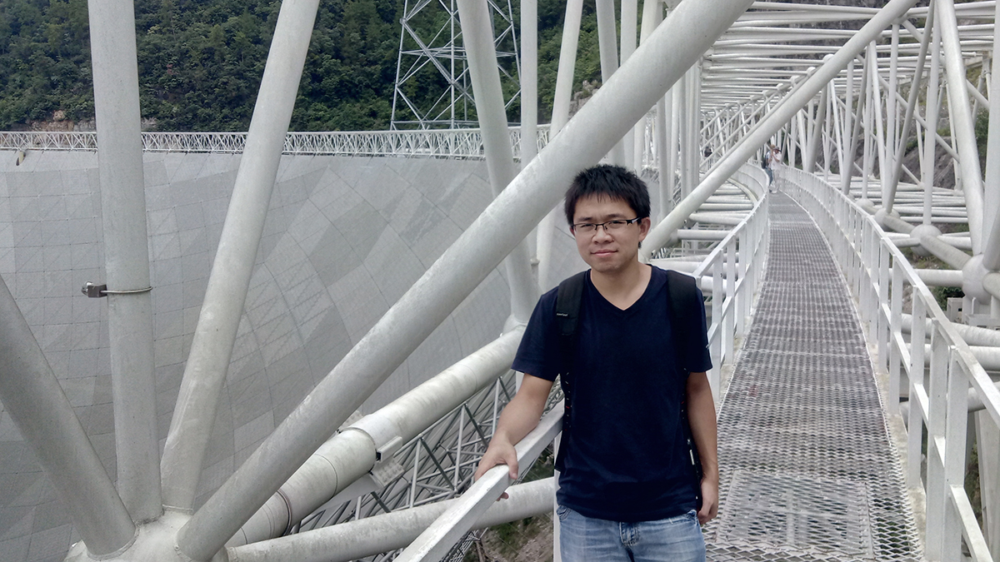

Professor
Planetary Scientist
School of Space Science and Technology
Shandong University
Contact:
180 Wenhua Xi Rd.
Weihai, Shandong, 264209
China

I am a Professor of Planetary Science at the Shandong University, Weihai. I received my B.E. in Remote Sensing in 2011 and Ph.D. in Planetary Geology in 2016, both from China University of Geosciences, Wuhan.
My research focuses on lunar and planetary geology. I combine orbital remote sensing observation, geological interpretation, and comparative planetology techniques to understand the surface geological processes (volcanism, impact cratering, etc.) on extraterrestrial worlds, especially the Moon. My recent work has involved volcanic eruption and deposits, polar morphology and volatiles on the Moon, and China’s lunar exploration missions. My works have been in journals including Nature Communications, Geology, Geophysical Research Letters. I also serve as a Associate Editor of Planetary Research, a diamond open-access journal of planetary science.
乔乐，山东大学空间科学与技术学院教授。从事月球地质学研究，通过遥感、地质及比较行星学等交叉手段，探索月球表面地质过程的成因及演化，重点关注月球火山作用、极区地貌及探月着陆区等。研究成果发表于Nature Communications、Geology、Geophysical Research Letters等期刊，主持国家自然科学基金委面上、专项、青年项目，任Planetary Research期刊副主编。
课题组长期招收月球遥感地质学方向的硕士生、博士生、博士后，要求具有相关专业(遥感、GIS、地学、计算机、空间、物理等)背景，如有意向欢迎邮件联系。